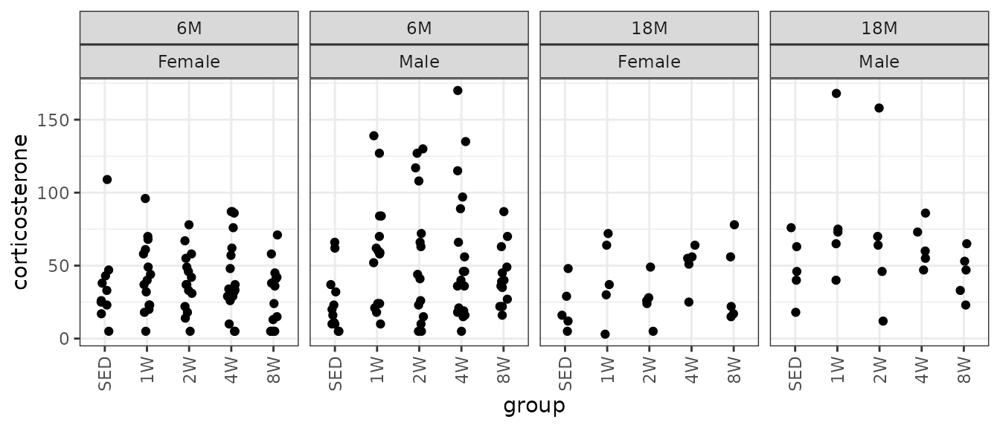
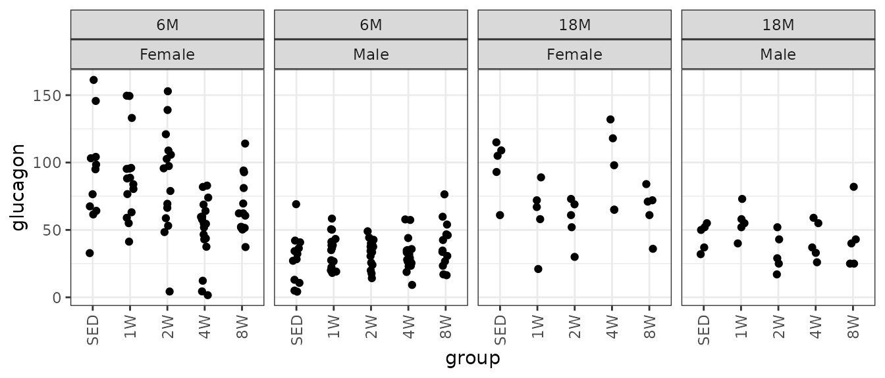
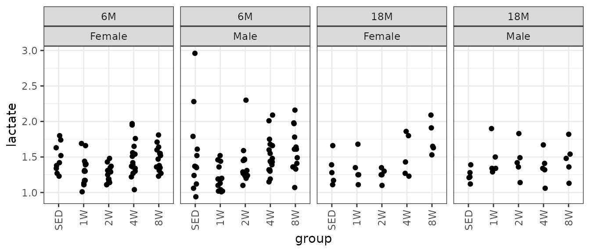
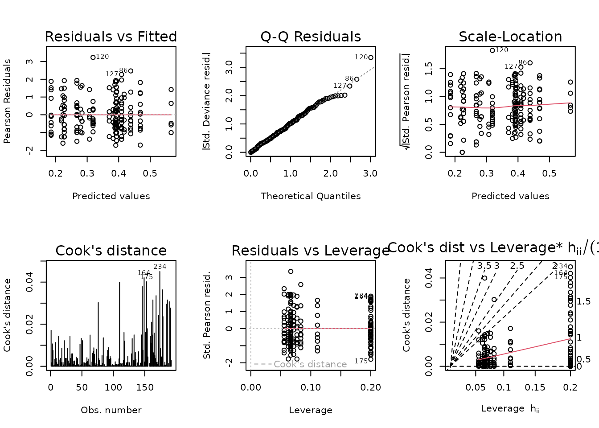
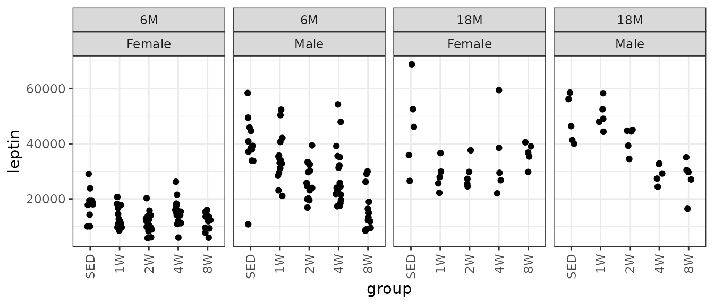
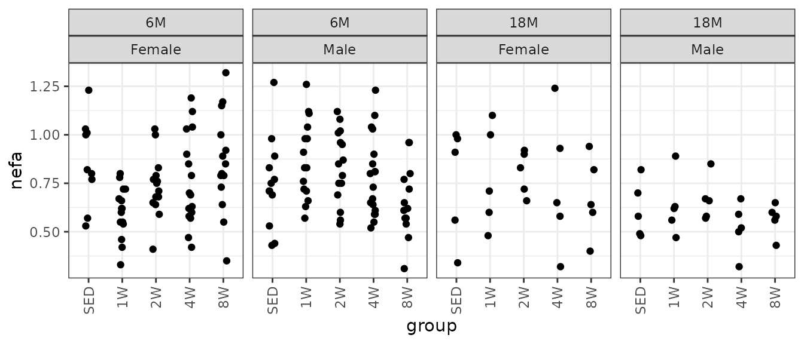

Statistical analyses of plasma clinical analytes
Tyler Sagendorf
14 July, 2023
Source:vignettes/ANALYTES_STATS.Rmd
ANALYTES_STATS.Rmd
# Required packages
library(MotrpacRatTrainingPhysiologyData)
library(ggplot2)
library(dplyr)
library(emmeans)
library(tibble)
library(tidyr)
library(purrr)
library(latex2exp)
theme_set(theme_bw()) # base plot themeRegression Models
Since clinical analytes are strictly positive, we will check the mean–variance relationship with code from Dunn and Smyth[1] (pg. 429–430) and fit an appropriate log-link GLM. This allows us to back-transform the means without introducing bias, unlike when the response is transformed. Also, the log-link allows us to test ratios between means, rather than their absolute differences.
If there are obvious problems with the model diagnostic plots, or the mean–variance relationship does not correspond to an exponential family distribution, we will include inverse group variances as weights in a log-link Gaussian GLM. Finally, we will remove insignificant predictors to achieve model parsimony based on ANOVA F-tests.
Corticosterone
# Plot points
ggplot(ANALYTES, aes(x = group, y = corticosterone)) +
geom_point(position = position_jitter(width = 0.1, height = 0),
na.rm = TRUE) +
facet_wrap(~ age + sex, nrow = 1) +
theme(axis.text.x = element_text(angle = 90, hjust = 1, vjust = 0.5))
We will check the mean-variance relationship.
mv <- ANALYTES %>%
group_by(sex, group, age) %>%
summarise(mn = mean(corticosterone, na.rm = TRUE),
vr = var(corticosterone, na.rm = TRUE))
fit.mv <- lm(log(vr) ~ log(mn), data = mv)
coef(fit.mv)
#> (Intercept) log(mn)
#> 1.258480 1.382773
plot(log(vr) ~ log(mn), data = mv, las = 1, pch = 19,
xlab = "log(group means)", ylab = "log(group variances)")
abline(coef(fit.mv), lwd = 2)The slope is closer to 1 than 2, so we will use a quasi-Poisson distribution.
fit.cort <- glm(corticosterone ~ age * sex * group,
family = quasipoisson("log"),
data = ANALYTES)
plot_lm(fit.cort)The model seems to be a poor fit. We will try a log-link Gaussian GLM with inverse group variance weights.
wt.cort <- ANALYTES %>%
group_by(age, sex, group) %>%
mutate(1 / var(corticosterone, na.rm = TRUE)) %>%
pull(-1)
fit.cort <- update(fit.cort, family = gaussian("log"),
weights = wt.cort)
plot_lm(fit.cort)The diagnostic plots seem mostly fine, though the left tail of the QQ-plot seems light. We will try to simplify the model to improve the model fit.
anova(fit.cort, test = "F")
#> Analysis of Deviance Table
#>
#> Model: gaussian, link: log
#>
#> Response: corticosterone
#>
#> Terms added sequentially (first to last)
#>
#>
#> Df Deviance Resid. Df Resid. Dev F Pr(>F)
#> NULL 194 224.85
#> age 1 1.3691 193 223.48 1.3690 0.243578
#> sex 1 8.4384 192 215.04 8.4380 0.004149 **
#> group 4 28.2334 188 186.81 7.0580 2.727e-05 ***
#> age:sex 1 1.4328 187 185.38 1.4328 0.232932
#> age:group 4 2.6398 183 182.74 0.6599 0.620660
#> sex:group 4 2.0953 179 180.64 0.5238 0.718373
#> age:sex:group 4 5.6396 175 175.00 1.4098 0.232623
#> ---
#> Signif. codes: 0 '***' 0.001 '**' 0.01 '*' 0.05 '.' 0.1 ' ' 1
fit.cort.1 <- update(fit.cort, formula = . ~ sex + group)
anova(fit.cort.1, fit.cort, test = "F")
#> Analysis of Deviance Table
#>
#> Model 1: corticosterone ~ sex + group
#> Model 2: corticosterone ~ age * sex * group
#> Resid. Df Resid. Dev Df Deviance F Pr(>F)
#> 1 189 187.4
#> 2 175 175.0 14 12.4 0.8857 0.5754There is no significant difference between the full model and the one with only sex and group as predictors.
fit.cort <- fit.cort.1
plot_lm(fit.cort)
summary(fit.cort)
#>
#> Call:
#> glm(formula = corticosterone ~ sex + group, family = gaussian("log"),
#> data = ANALYTES, weights = wt.cort)
#>
#> Coefficients:
#> Estimate Std. Error t value Pr(>|t|)
#> (Intercept) 3.17354 0.14297 22.197 < 2e-16 ***
#> sexMale 0.33925 0.08581 3.953 0.000109 ***
#> group1W 0.60556 0.16273 3.721 0.000261 ***
#> group2W 0.42548 0.16805 2.532 0.012157 *
#> group4W 0.63936 0.14661 4.361 2.13e-05 ***
#> group8W 0.24682 0.15715 1.571 0.117949
#> ---
#> Signif. codes: 0 '***' 0.001 '**' 0.01 '*' 0.05 '.' 0.1 ' ' 1
#>
#> (Dispersion parameter for gaussian family taken to be 0.9915343)
#>
#> Null deviance: 224.85 on 194 degrees of freedom
#> Residual deviance: 187.40 on 189 degrees of freedom
#> (87 observations deleted due to missingness)
#> AIC: 1845.4
#>
#> Number of Fisher Scoring iterations: 6Glucagon
# Plot points
ggplot(ANALYTES, aes(x = group, y = glucagon)) +
geom_point(position = position_jitter(width = 0.1, height = 0),
na.rm = TRUE) +
facet_wrap(~ age + sex, nrow = 1) +
theme(axis.text.x = element_text(angle = 90, hjust = 1, vjust = 0.5))
We will check the mean-variance relationship.
mv <- ANALYTES %>%
group_by(sex, group, age) %>%
summarise(mn = mean(glucagon, na.rm = TRUE),
vr = var(glucagon, na.rm = TRUE))
fit.mv <- lm(log(vr) ~ log(mn), data = mv)
coef(fit.mv)
#> (Intercept) log(mn)
#> -0.1011426 1.5066221
plot(log(vr) ~ log(mn), data = mv, las = 1, pch = 19,
xlab = "log(group means)", ylab = "log(group variances)")
abline(coef(fit.mv), lwd = 2)The slope suggests a variance function approximately of the form \(V(\mu) = \mu^{1.5}\)). This is intermediate between the Poisson and gamma distributions. We will fit a quasi-Poisson GLM since we are not dealing with count data.
fit.glucagon <- glm(glucagon ~ age * sex * group,
family = quasipoisson("log"),
data = ANALYTES)
plot_lm(fit.glucagon)The diagnostic plots look fine. We will try to simplify the model.
anova(fit.glucagon, test = "F")
#> Analysis of Deviance Table
#>
#> Model: quasipoisson, link: log
#>
#> Response: glucagon
#>
#> Terms added sequentially (first to last)
#>
#>
#> Df Deviance Resid. Df Resid. Dev F Pr(>F)
#> NULL 195 3517.0
#> age 1 16.90 194 3500.1 1.9815 0.160999
#> sex 1 1381.68 193 2118.4 162.0164 < 2.2e-16 ***
#> group 4 124.07 189 1994.4 3.6371 0.007115 **
#> age:sex 1 37.04 188 1957.3 4.3428 0.038610 *
#> age:group 4 151.57 184 1805.8 4.4432 0.001910 **
#> sex:group 4 84.87 180 1720.9 2.4880 0.045129 *
#> age:sex:group 4 84.33 176 1636.6 2.4723 0.046262 *
#> ---
#> Signif. codes: 0 '***' 0.001 '**' 0.01 '*' 0.05 '.' 0.1 ' ' 1The 3-way intersection is significant, so we will not remove any terms.
summary(fit.glucagon)
#>
#> Call:
#> glm(formula = glucagon ~ age * sex * group, family = quasipoisson("log"),
#> data = ANALYTES)
#>
#> Coefficients:
#> Estimate Std. Error t value Pr(>|t|)
#> (Intercept) 4.52021 0.09187 49.202 < 2e-16 ***
#> age18M 0.05037 0.16154 0.312 0.75555
#> sexMale -1.16651 0.18242 -6.395 1.40e-09 ***
#> group1W -0.01663 0.12138 -0.137 0.89121
#> group2W -0.05614 0.12242 -0.459 0.64711
#> group4W -0.60907 0.13388 -4.549 9.99e-06 ***
#> group8W -0.32204 0.13263 -2.428 0.01619 *
#> age18M:sexMale 0.40703 0.29777 1.367 0.17340
#> age18M:group1W -0.43654 0.24529 -1.780 0.07685 .
#> age18M:group2W -0.47139 0.25013 -1.885 0.06114 .
#> age18M:group4W 0.59867 0.23113 2.590 0.01040 *
#> age18M:group8W -0.07724 0.24813 -0.311 0.75597
#> sexMale:group1W 0.22056 0.23617 0.934 0.35164
#> sexMale:group2W 0.19002 0.23918 0.794 0.42799
#> sexMale:group4W 0.71379 0.24016 2.972 0.00337 **
#> sexMale:group8W 0.63407 0.24333 2.606 0.00995 **
#> age18M:sexMale:group1W 0.43970 0.41185 1.068 0.28716
#> age18M:sexMale:group2W 0.02896 0.44033 0.066 0.94764
#> age18M:sexMale:group4W -0.77681 0.41415 -1.876 0.06235 .
#> age18M:sexMale:group8W -0.28469 0.42496 -0.670 0.50378
#> ---
#> Signif. codes: 0 '***' 0.001 '**' 0.01 '*' 0.05 '.' 0.1 ' ' 1
#>
#> (Dispersion parameter for quasipoisson family taken to be 8.528022)
#>
#> Null deviance: 3517.0 on 195 degrees of freedom
#> Residual deviance: 1636.6 on 176 degrees of freedom
#> (86 observations deleted due to missingness)
#> AIC: NA
#>
#> Number of Fisher Scoring iterations: 4Glucose
# Plot points
ggplot(ANALYTES, aes(x = group, y = glucose)) +
geom_point(position = position_jitter(width = 0.1, height = 0),
na.rm = TRUE) +
facet_wrap(~ age + sex, nrow = 1) +
theme(axis.text.x = element_text(angle = 90, hjust = 1, vjust = 0.5))There are several outlying values in the 18M SED female and 6M 8W male groups. We will check the mean-variance relationship.
mv <- ANALYTES %>%
group_by(sex, group, age) %>%
summarise(mn = mean(glucose, na.rm = TRUE),
vr = var(glucose, na.rm = TRUE))
fit.mv <- lm(log(vr) ~ log(mn), data = mv)
coef(fit.mv)
#> (Intercept) log(mn)
#> 9.2366703 -0.8963349
plot(log(vr) ~ log(mn), data = mv, las = 1, pch = 19,
xlab = "log(group means)", ylab = "log(group variances)")
abline(coef(fit.mv), lwd = 2)The slope indicates a slightly decreasing mean-variance trend, though some groups have lower variances than expected, based on the others. We will fit a log-link Gaussian GLM with inverse group variance weights.
wt.glucose <- ANALYTES %>%
group_by(age, sex, group) %>%
mutate(1 / var(glucose, na.rm = TRUE)) %>%
pull(-1)
fit.glucose <- glm(glucose ~ age * sex * group,
family = gaussian("log"),
weights = wt.glucose,
data = ANALYTES)
plot_lm(fit.glucose)The diagnostic plots look fine. We will try to simplify the model.
anova(fit.glucose, test = "F")
#> Analysis of Deviance Table
#>
#> Model: gaussian, link: log
#>
#> Response: glucose
#>
#> Terms added sequentially (first to last)
#>
#>
#> Df Deviance Resid. Df Resid. Dev F Pr(>F)
#> NULL 191 344.83
#> age 1 7.690 190 337.14 7.6904 0.006164 **
#> sex 1 98.025 189 239.11 98.0247 < 2.2e-16 ***
#> group 4 5.258 185 233.85 1.3146 0.266475
#> age:sex 1 10.226 184 223.63 10.2265 0.001648 **
#> age:group 4 8.622 180 215.01 2.1554 0.076077 .
#> sex:group 4 36.174 176 178.83 9.0436 1.184e-06 ***
#> age:sex:group 4 6.832 172 172.00 1.7080 0.150361
#> ---
#> Signif. codes: 0 '***' 0.001 '**' 0.01 '*' 0.05 '.' 0.1 ' ' 1
fit.glucose.1 <- update(fit.glucose,
formula = . ~ sex * (age + group))
fit.glucose.2 <- update(fit.glucose,
formula = . ~ (sex + age + group) ^ 2)
anova(fit.glucose.1, fit.glucose.2, fit.glucose, test = "F")
#> Analysis of Deviance Table
#>
#> Model 1: glucose ~ sex + age + group + sex:age + sex:group
#> Model 2: glucose ~ sex + age + group + sex:age + sex:group + age:group
#> Model 3: glucose ~ age * sex * group
#> Resid. Df Resid. Dev Df Deviance F Pr(>F)
#> 1 180 194.28
#> 2 176 178.83 4 15.4500 3.8625 0.004956 **
#> 3 172 172.00 4 6.8321 1.7080 0.150361
#> ---
#> Signif. codes: 0 '***' 0.001 '**' 0.01 '*' 0.05 '.' 0.1 ' ' 1We will use the model with all 2-way interactions.
fit.glucose <- fit.glucose.2
plot_lm(fit.glucose)
summary(fit.glucose)
#>
#> Call:
#> glm(formula = glucose ~ sex + age + group + sex:age + sex:group +
#> age:group, family = gaussian("log"), data = ANALYTES, weights = wt.glucose)
#>
#> Coefficients:
#> Estimate Std. Error t value Pr(>|t|)
#> (Intercept) 5.00831 0.03622 138.284 < 2e-16 ***
#> sexMale 0.15834 0.03779 4.190 4.41e-05 ***
#> age18M -0.02227 0.03032 -0.734 0.463756
#> group1W 0.02367 0.04213 0.562 0.574959
#> group2W -0.02930 0.04134 -0.709 0.479400
#> group4W 0.11147 0.03865 2.884 0.004413 **
#> group8W 0.07689 0.03816 2.015 0.045419 *
#> sexMale:age18M -0.04931 0.02245 -2.197 0.029335 *
#> sexMale:group1W -0.02699 0.04432 -0.609 0.543278
#> sexMale:group2W 0.04294 0.04325 0.993 0.322196
#> sexMale:group4W -0.11469 0.04175 -2.747 0.006633 **
#> sexMale:group8W -0.09089 0.04480 -2.029 0.043964 *
#> age18M:group1W 0.08756 0.03543 2.471 0.014416 *
#> age18M:group2W 0.11180 0.03234 3.457 0.000686 ***
#> age18M:group4W 0.04195 0.02733 1.535 0.126644
#> age18M:group8W 0.03374 0.03436 0.982 0.327500
#> ---
#> Signif. codes: 0 '***' 0.001 '**' 0.01 '*' 0.05 '.' 0.1 ' ' 1
#>
#> (Dispersion parameter for gaussian family taken to be 1.016093)
#>
#> Null deviance: 344.83 on 191 degrees of freedom
#> Residual deviance: 178.83 on 176 degrees of freedom
#> (90 observations deleted due to missingness)
#> AIC: 1478
#>
#> Number of Fisher Scoring iterations: 4Glycerol
# Plot points
ggplot(ANALYTES, aes(x = group, y = glycerol)) +
geom_point(position = position_jitter(width = 0.1, height = 0),
na.rm = TRUE) +
facet_wrap(~ age + sex, nrow = 1) +
theme(axis.text.x = element_text(angle = 90, hjust = 1, vjust = 0.5))
We will check the mean-variance relationship.
mv <- ANALYTES %>%
group_by(sex, group, age) %>%
summarise(mn = mean(glycerol, na.rm = TRUE),
vr = var(glycerol, na.rm = TRUE))
fit.mv <- lm(log(vr) ~ log(mn), data = mv)
coef(fit.mv)
#> (Intercept) log(mn)
#> -2.741606 2.079242
plot(log(vr) ~ log(mn), data = mv, las = 1, pch = 19,
xlab = "log(group means)", ylab = "log(group variances)")
abline(coef(fit.mv), lwd = 2)The slope near 2 suggest a gamma GLM may be appropriate.
fit.glycerol <- glm(glycerol ~ age * sex * group,
family = Gamma("log"),
data = ANALYTES)
plot_lm(fit.glycerol)The diagnostic plots look fine. We will try to simplify the model.
anova(fit.glycerol, test = "F")
#> Analysis of Deviance Table
#>
#> Model: Gamma, link: log
#>
#> Response: glycerol
#>
#> Terms added sequentially (first to last)
#>
#>
#> Df Deviance Resid. Df Resid. Dev F Pr(>F)
#> NULL 191 17.198
#> age 1 0.06190 190 17.136 0.8627 0.3542721
#> sex 1 1.74132 189 15.395 24.2717 1.954e-06 ***
#> group 4 0.86834 185 14.526 3.0259 0.0191942 *
#> age:sex 1 0.01313 184 14.513 0.1830 0.6693131
#> age:group 4 0.14560 180 14.368 0.5074 0.7303703
#> sex:group 4 1.45233 176 12.915 5.0609 0.0007024 ***
#> age:sex:group 4 0.85400 172 12.061 2.9759 0.0207976 *
#> ---
#> Signif. codes: 0 '***' 0.001 '**' 0.01 '*' 0.05 '.' 0.1 ' ' 1The 3-way interaction is significant, so we will not remove any terms.
summary(fit.glycerol)
#>
#> Call:
#> glm(formula = glycerol ~ age * sex * group, family = Gamma("log"),
#> data = ANALYTES)
#>
#> Coefficients:
#> Estimate Std. Error t value Pr(>|t|)
#> (Intercept) 0.603709 0.089283 6.762 2.04e-10 ***
#> age18M -0.184998 0.149398 -1.238 0.21730
#> sexMale -0.554125 0.118110 -4.692 5.51e-06 ***
#> group1W -0.343398 0.112935 -3.041 0.00273 **
#> group2W -0.347001 0.112935 -3.073 0.00247 **
#> group4W -0.205772 0.111603 -1.844 0.06694 .
#> group8W -0.218446 0.114437 -1.909 0.05794 .
#> age18M:sexMale 0.466156 0.206511 2.257 0.02525 *
#> age18M:group1W 0.368090 0.203596 1.808 0.07236 .
#> age18M:group2W 0.491330 0.203596 2.413 0.01686 *
#> age18M:group4W 0.098948 0.202860 0.488 0.62634
#> age18M:group8W -0.001413 0.204433 -0.007 0.99449
#> sexMale:group1W 0.616381 0.153348 4.019 8.71e-05 ***
#> sexMale:group2W 0.636743 0.153348 4.152 5.17e-05 ***
#> sexMale:group4W 0.265043 0.149732 1.770 0.07848 .
#> sexMale:group8W 0.102887 0.156822 0.656 0.51265
#> age18M:sexMale:group1W -0.682135 0.284446 -2.398 0.01755 *
#> age18M:sexMale:group2W -0.834181 0.284446 -2.933 0.00382 **
#> age18M:sexMale:group4W -0.318374 0.282513 -1.127 0.26134
#> age18M:sexMale:group8W -0.199866 0.286334 -0.698 0.48611
#> ---
#> Signif. codes: 0 '***' 0.001 '**' 0.01 '*' 0.05 '.' 0.1 ' ' 1
#>
#> (Dispersion parameter for Gamma family taken to be 0.07174256)
#>
#> Null deviance: 17.198 on 191 degrees of freedom
#> Residual deviance: 12.061 on 172 degrees of freedom
#> (90 observations deleted due to missingness)
#> AIC: 148.8
#>
#> Number of Fisher Scoring iterations: 4Insulin
It does not matter which units we use for insulin. It does not affect the model fit or the ratios when we set up the comparisons later.
# Plot points
ggplot(ANALYTES, aes(x = group, y = insulin_pm)) +
geom_point(position = position_jitter(width = 0.1, height = 0),
na.rm = TRUE) +
facet_wrap(~ age + sex, nrow = 1) +
theme(axis.text.x = element_text(angle = 90, hjust = 1, vjust = 0.5))There are extremely large values in the 2W Female group at both ages, though they are comparable to values from their corresponding 4W groups. We will check the mean-variance relationship.
mv <- ANALYTES %>%
group_by(sex, group, age) %>%
summarise(mn = mean(insulin_pm, na.rm = TRUE),
vr = var(insulin_pm, na.rm = TRUE))
fit.mv <- lm(log(vr) ~ log(mn), data = mv)
coef(fit.mv)
#> (Intercept) log(mn)
#> -2.263771 1.937433
plot(log(vr) ~ log(mn), data = mv, las = 1, pch = 19,
xlab = "log(group means)", ylab = "log(group variances)")
abline(coef(fit.mv), lwd = 2)The slope is close to 2, so a gamma GLM may be appropriate.
fit.ins <- glm(insulin_pm ~ age * sex * group,
family = Gamma("log"),
data = ANALYTES)
plot_lm(fit.ins)
The gamma distribution is sensitive to large outlying values, which we observed when plotting insulin. We will try a log-link Gaussian with reciprocal group variances as weights.
wt.ins <- ANALYTES %>%
group_by(age, sex, group) %>%
mutate(1 / var(insulin_pm, na.rm = TRUE)) %>%
pull(-1)
fit.ins <- update(fit.ins,
family = gaussian("log"),
weights = wt.ins)
plot_lm(fit.ins)The diagnostic plots look fine now. We will try to simplify the model.
anova(fit.ins, test = "F")
#> Analysis of Deviance Table
#>
#> Model: gaussian, link: log
#>
#> Response: insulin_pm
#>
#> Terms added sequentially (first to last)
#>
#>
#> Df Deviance Resid. Df Resid. Dev F Pr(>F)
#> NULL 195 305.98
#> age 1 43.004 194 262.97 43.0039 5.860e-10 ***
#> sex 1 38.458 193 224.51 38.4581 3.874e-09 ***
#> group 4 21.242 189 203.27 5.3105 0.0004628 ***
#> age:sex 1 12.650 188 190.62 12.6501 0.0004826 ***
#> age:group 4 1.949 184 188.67 0.4873 0.7450724
#> sex:group 4 11.067 180 177.61 2.7667 0.0289877 *
#> age:sex:group 4 1.607 176 176.00 0.4019 0.8071332
#> ---
#> Signif. codes: 0 '***' 0.001 '**' 0.01 '*' 0.05 '.' 0.1 ' ' 1We will remove the group:age and 3-way interactions.
fit.ins.1 <- update(fit.ins,
formula = . ~ sex * (age + group))
fit.ins.2 <- update(fit.ins,
formula = . ~ (age + sex + group) ^ 2)
anova(fit.ins.1, fit.ins.2, fit.ins, test = "F")
#> Analysis of Deviance Table
#>
#> Model 1: insulin_pm ~ sex + age + group + sex:age + sex:group
#> Model 2: insulin_pm ~ age + sex + group + age:sex + age:group + sex:group
#> Model 3: insulin_pm ~ age * sex * group
#> Resid. Df Resid. Dev Df Deviance F Pr(>F)
#> 1 184 180.85
#> 2 180 177.61 4 3.2462 0.8116 0.5193
#> 3 176 176.00 4 1.6075 0.4019 0.8071No significant differences between the models, so we will use the simplest one.
fit.ins <- fit.ins.1
plot_lm(fit.ins)
summary(fit.ins)
#>
#> Call:
#> glm(formula = insulin_pm ~ sex + age + group + sex:age + sex:group,
#> family = gaussian("log"), data = ANALYTES, weights = wt.ins)
#>
#> Coefficients:
#> Estimate Std. Error t value Pr(>|t|)
#> (Intercept) 5.953791 0.078922 75.439 < 2e-16 ***
#> sexMale 0.231786 0.107888 2.148 0.03299 *
#> age18M 0.415816 0.063548 6.543 5.79e-10 ***
#> group1W -0.007132 0.085140 -0.084 0.93333
#> group2W 0.107991 0.121619 0.888 0.37573
#> group4W 0.171370 0.117420 1.459 0.14614
#> group8W 0.030930 0.092174 0.336 0.73758
#> sexMale:age18M -0.257350 0.081706 -3.150 0.00191 **
#> sexMale:group1W 0.248068 0.119721 2.072 0.03965 *
#> sexMale:group2W 0.097820 0.149081 0.656 0.51254
#> sexMale:group4W 0.082580 0.149639 0.552 0.58171
#> sexMale:group8W -0.043708 0.120389 -0.363 0.71698
#> ---
#> Signif. codes: 0 '***' 0.001 '**' 0.01 '*' 0.05 '.' 0.1 ' ' 1
#>
#> (Dispersion parameter for gaussian family taken to be 0.9829014)
#>
#> Null deviance: 305.98 on 195 degrees of freedom
#> Residual deviance: 180.85 on 184 degrees of freedom
#> (86 observations deleted due to missingness)
#> AIC: 2506.2
#>
#> Number of Fisher Scoring iterations: 5Ketones
# Plot points
ggplot(ANALYTES, aes(x = group, y = ketones)) +
geom_point(position = position_jitter(width = 0.1, height = 0),
na.rm = TRUE) +
facet_wrap(~ age + sex, nrow = 1) +
theme(axis.text.x = element_text(angle = 90, hjust = 1, vjust = 0.5))We will check the mean-variance relationship.
mv <- ANALYTES %>%
group_by(sex, group, age) %>%
summarise(mn = mean(ketones, na.rm = TRUE),
vr = var(ketones, na.rm = TRUE))
fit.mv <- lm(log(vr) ~ log(mn), data = mv)
coef(fit.mv)
#> (Intercept) log(mn)
#> -0.8087957 1.7185456
plot(log(vr) ~ log(mn), data = mv, las = 1, pch = 19,
xlab = "log(group means)", ylab = "log(group variances)")
abline(coef(fit.mv), lwd = 2)The slope of the line is close to 2, suggesting a gamma GLM may be appropriate.
fit.ket <- glm(ketones ~ sex * group * age,
family = Gamma("log"),
data = ANALYTES)
plot_lm(fit.ket)The diagnostic plots look fine. We will try to simplify the model.
anova(fit.ket, test = "F")
#> Analysis of Deviance Table
#>
#> Model: Gamma, link: log
#>
#> Response: ketones
#>
#> Terms added sequentially (first to last)
#>
#>
#> Df Deviance Resid. Df Resid. Dev F Pr(>F)
#> NULL 195 31.057
#> sex 1 3.0984 194 27.958 36.8486 7.644e-09 ***
#> group 4 5.6087 190 22.349 16.6755 1.318e-11 ***
#> age 1 4.5876 189 17.762 54.5590 5.811e-12 ***
#> sex:group 4 0.5164 185 17.245 1.5353 0.19394
#> sex:age 1 0.0731 184 17.172 0.8697 0.35232
#> group:age 4 0.7610 180 16.411 2.2626 0.06429 .
#> sex:group:age 4 0.8083 176 15.603 2.4033 0.05157 .
#> ---
#> Signif. codes: 0 '***' 0.001 '**' 0.01 '*' 0.05 '.' 0.1 ' ' 1The 3-way interaction is marginally significant, so we will not simplify the model.
summary(fit.ket)
#>
#> Call:
#> glm(formula = ketones ~ sex * group * age, family = Gamma("log"),
#> data = ANALYTES)
#>
#> Coefficients:
#> Estimate Std. Error t value Pr(>|t|)
#> (Intercept) 6.70853 0.08743 76.729 < 2e-16 ***
#> sexMale -0.24993 0.12104 -2.065 0.04041 *
#> group1W 0.01858 0.11511 0.161 0.87192
#> group2W 0.07947 0.11511 0.690 0.49087
#> group4W -0.35175 0.11098 -3.170 0.00180 **
#> group8W -0.25772 0.11683 -2.206 0.02869 *
#> age18M -0.48794 0.15640 -3.120 0.00212 **
#> sexMale:group1W -0.01905 0.16082 -0.118 0.90582
#> sexMale:group2W -0.07806 0.16082 -0.485 0.62801
#> sexMale:group4W 0.15007 0.15490 0.969 0.33397
#> sexMale:group8W -0.14608 0.16470 -0.887 0.37631
#> sexMale:age18M 0.11201 0.21974 0.510 0.61086
#> group1W:age18M 0.26721 0.21653 1.234 0.21883
#> group2W:age18M 0.33010 0.21653 1.525 0.12918
#> group4W:age18M 0.16232 0.21436 0.757 0.44992
#> group8W:age18M -0.49566 0.21745 -2.279 0.02384 *
#> sexMale:group1W:age18M -0.22736 0.30517 -0.745 0.45726
#> sexMale:group2W:age18M -0.28950 0.30517 -0.949 0.34411
#> sexMale:group4W:age18M -0.03254 0.30210 -0.108 0.91434
#> sexMale:group8W:age18M 0.55206 0.30724 1.797 0.07407 .
#> ---
#> Signif. codes: 0 '***' 0.001 '**' 0.01 '*' 0.05 '.' 0.1 ' ' 1
#>
#> (Dispersion parameter for Gamma family taken to be 0.08408593)
#>
#> Null deviance: 31.057 on 195 degrees of freedom
#> Residual deviance: 15.603 on 176 degrees of freedom
#> (86 observations deleted due to missingness)
#> AIC: 2586.3
#>
#> Number of Fisher Scoring iterations: 4Lactate
# Plot points
ggplot(ANALYTES, aes(x = group, y = lactate)) +
geom_point(position = position_jitter(width = 0.1, height = 0),
na.rm = TRUE) +
facet_wrap(~ age + sex, nrow = 1) +
theme(axis.text.x = element_text(angle = 90, hjust = 1, vjust = 0.5))
The large value in the 6M SED Male group may be an outlier. There is also a large value in the 2W group. We will check the mean-variance relationship.
mv <- ANALYTES %>%
group_by(sex, group, age) %>%
summarise(mn = mean(lactate, na.rm = TRUE),
vr = var(lactate, na.rm = TRUE))
fit.mv <- lm(log(vr) ~ log(mn), data = mv)
coef(fit.mv)
#> (Intercept) log(mn)
#> -5.022331 5.637233
plot(log(vr) ~ log(mn), data = mv, las = 1, pch = 19,
xlab = "log(group means)", ylab = "log(group variances)")
abline(coef(fit.mv), lwd = 2)The slope of the line is close to 6! We will try a log-link Gaussian GLM with inverse group variance weights.
wt.lact <- ANALYTES %>%
group_by(age, sex, group) %>%
mutate(1 / var(lactate, na.rm = TRUE)) %>%
pull(-1)
fit.lact <- glm(lactate ~ age * sex * group,
family = gaussian("log"),
weights = wt.lact,
data = ANALYTES)
plot_lm(fit.lact)
We will try to simplify the model to improve the diagnostics.
anova(fit.lact, test = "F")
#> Analysis of Deviance Table
#>
#> Model: gaussian, link: log
#>
#> Response: lactate
#>
#> Terms added sequentially (first to last)
#>
#>
#> Df Deviance Resid. Df Resid. Dev F Pr(>F)
#> NULL 191 258.27
#> age 1 0.768 190 257.51 0.7685 0.381914
#> sex 1 0.000 189 257.51 0.0000 0.996278
#> group 4 55.274 185 202.23 13.8183 8.571e-10 ***
#> age:sex 1 1.790 184 200.44 1.7897 0.182724
#> age:group 4 13.915 180 186.53 3.4787 0.009243 **
#> sex:group 4 5.703 176 180.82 1.4258 0.227441
#> age:sex:group 4 8.824 172 172.00 2.2061 0.070325 .
#> ---
#> Signif. codes: 0 '***' 0.001 '**' 0.01 '*' 0.05 '.' 0.1 ' ' 1
fit.lact.1 <- update(fit.lact, formula = . ~ age * group + sex)
anova(fit.lact.1, fit.lact, test = "F")
#> Analysis of Deviance Table
#>
#> Model 1: lactate ~ age + group + sex + age:group
#> Model 2: lactate ~ age * sex * group
#> Resid. Df Resid. Dev Df Deviance F Pr(>F)
#> 1 181 187.09
#> 2 172 172.00 9 15.091 1.6768 0.09786 .
#> ---
#> Signif. codes: 0 '***' 0.001 '**' 0.01 '*' 0.05 '.' 0.1 ' ' 1There is no significant difference between the models, so we will use the simpler one.
fit.lact <- fit.lact.1
plot_lm(fit.lact)The diagnostic plots look better.
summary(fit.lact)
#>
#> Call:
#> glm(formula = lactate ~ age + group + sex + age:group, family = gaussian("log"),
#> data = ANALYTES, weights = wt.lact)
#>
#> Coefficients:
#> Estimate Std. Error t value Pr(>|t|)
#> (Intercept) 0.398546 0.043061 9.255 < 2e-16 ***
#> age18M -0.175327 0.056484 -3.104 0.002216 **
#> group1W -0.182192 0.051803 -3.517 0.000552 ***
#> group2W -0.158544 0.048356 -3.279 0.001251 **
#> group4W -0.001806 0.053137 -0.034 0.972925
#> group8W 0.010868 0.050979 0.213 0.831427
#> sexMale 0.007122 0.024449 0.291 0.771154
#> age18M:group1W 0.285175 0.083121 3.431 0.000745 ***
#> age18M:group2W 0.176902 0.068426 2.585 0.010516 *
#> age18M:group4W 0.121508 0.084703 1.435 0.153149
#> age18M:group8W 0.249203 0.077829 3.202 0.001613 **
#> ---
#> Signif. codes: 0 '***' 0.001 '**' 0.01 '*' 0.05 '.' 0.1 ' ' 1
#>
#> (Dispersion parameter for gaussian family taken to be 1.033653)
#>
#> Null deviance: 258.28 on 191 degrees of freedom
#> Residual deviance: 187.09 on 181 degrees of freedom
#> (90 observations deleted due to missingness)
#> AIC: -15.338
#>
#> Number of Fisher Scoring iterations: 5Leptin
# Plot points
ggplot(ANALYTES, aes(x = group, y = leptin)) +
geom_point(position = position_jitter(width = 0.1, height = 0),
na.rm = TRUE) +
facet_wrap(~ age + sex, nrow = 1) +
theme(axis.text.x = element_text(angle = 90, hjust = 1, vjust = 0.5))
There are a few large outlying values. We will check the mean-variance relationship.
mv <- ANALYTES %>%
group_by(sex, group, age) %>%
summarise(mn = mean(leptin, na.rm = TRUE),
vr = var(leptin, na.rm = TRUE))
fit.mv <- lm(log(vr) ~ log(mn), data = mv)
coef(fit.mv)
#> (Intercept) log(mn)
#> 6.275343 1.098834
plot(log(vr) ~ log(mn), data = mv, las = 1, pch = 19,
xlab = "log(group means)", ylab = "log(group variances)")
abline(coef(fit.mv), lwd = 2)The slope is close to 1, so we will use a quasi-Poisson distribution, since we are not dealing with count data.
fit.lep <- glm(leptin ~ age * sex * group,
family = quasipoisson("log"),
data = ANALYTES)
plot_lm(fit.lep)Observations are deviating from the right tail of the QQ-plot. We will fit a log-link Gaussian GLM with inverse group variance weights.
wt.lep <- ANALYTES %>%
group_by(age, sex, group) %>%
mutate(1 / var(leptin, na.rm = TRUE)) %>%
pull(-1)
fit.lep <- update(fit.lep,
family = gaussian("log"),
weights = wt.lep)
plot_lm(fit.lep)The diagnostic plots look fine. We will try to simplify the model.
anova(fit.lep, test = "F")
#> Analysis of Deviance Table
#>
#> Model: gaussian, link: log
#>
#> Response: leptin
#>
#> Terms added sequentially (first to last)
#>
#>
#> Df Deviance Resid. Df Resid. Dev F Pr(>F)
#> NULL 195 1014.00
#> age 1 495.90 194 518.10 495.9023 < 2.2e-16 ***
#> sex 1 111.23 193 406.86 111.2346 < 2.2e-16 ***
#> group 4 74.77 189 332.09 18.6936 8.005e-13 ***
#> age:sex 1 62.23 188 269.86 62.2254 3.116e-13 ***
#> age:group 4 32.67 184 237.19 8.1674 4.595e-06 ***
#> sex:group 4 57.74 180 179.45 14.4352 3.260e-10 ***
#> age:sex:group 4 3.45 176 176.00 0.8630 0.4874
#> ---
#> Signif. codes: 0 '***' 0.001 '**' 0.01 '*' 0.05 '.' 0.1 ' ' 1We will remove the 3-way interaction.
summary(fit.lep)
#>
#> Call:
#> glm(formula = leptin ~ age + sex + group + age:sex + age:group +
#> sex:group, family = gaussian("log"), data = ANALYTES, weights = wt.lep)
#>
#> Coefficients:
#> Estimate Std. Error t value Pr(>|t|)
#> (Intercept) 9.83738 0.08236 119.447 < 2e-16 ***
#> age18M 0.78252 0.11513 6.797 1.52e-10 ***
#> sexMale 0.71056 0.10623 6.689 2.74e-10 ***
#> group1W -0.38005 0.10468 -3.631 0.000368 ***
#> group2W -0.50031 0.10730 -4.663 6.07e-06 ***
#> group4W -0.19300 0.10538 -1.831 0.068697 .
#> group8W -0.41667 0.10238 -4.070 7.03e-05 ***
#> age18M:sexMale -0.51809 0.07817 -6.628 3.82e-10 ***
#> age18M:group1W 0.06037 0.11838 0.510 0.610696
#> age18M:group2W 0.17099 0.11886 1.439 0.151993
#> age18M:group4W -0.20094 0.13811 -1.455 0.147441
#> age18M:group8W 0.29560 0.13201 2.239 0.026371 *
#> sexMale:group1W 0.32090 0.12564 2.554 0.011475 *
#> sexMale:group2W 0.14665 0.12670 1.157 0.248641
#> sexMale:group4W -0.11858 0.14571 -0.814 0.416805
#> sexMale:group8W -0.45445 0.14257 -3.187 0.001693 **
#> ---
#> Signif. codes: 0 '***' 0.001 '**' 0.01 '*' 0.05 '.' 0.1 ' ' 1
#>
#> (Dispersion parameter for gaussian family taken to be 0.9969575)
#>
#> Null deviance: 1014.00 on 195 degrees of freedom
#> Residual deviance: 179.45 on 180 degrees of freedom
#> (86 observations deleted due to missingness)
#> AIC: 3988
#>
#> Number of Fisher Scoring iterations: 5NEFA
# Plot points
ggplot(ANALYTES, aes(x = group, y = nefa)) +
geom_point(position = position_jitter(width = 0.1, height = 0),
na.rm = TRUE) +
facet_wrap(~ age + sex, nrow = 1) +
theme(axis.text.x = element_text(angle = 90, hjust = 1, vjust = 0.5))
We will check the mean-variance relationship.
mv <- ANALYTES %>%
group_by(sex, group, age) %>%
summarise(mn = mean(nefa, na.rm = TRUE),
vr = var(nefa, na.rm = TRUE))
fit.mv <- lm(log(vr) ~ log(mn), data = mv)
coef(fit.mv)
#> (Intercept) log(mn)
#> -2.400661 3.016098
plot(log(vr) ~ log(mn), data = mv, las = 1, pch = 19,
xlab = "log(group means)", ylab = "log(group variances)")
abline(coef(fit.mv), lwd = 2)The slope of the line is close to 3, suggesting the group variance is proportional to the cube of the group mean. This corresponds to an inverse Gaussian distribution.
fit.nefa <- glm(nefa ~ sex * group * age,
family = inverse.gaussian("log"),
data = ANALYTES)
plot_lm(fit.nefa)The diagnostic plots look fine. We will try to simplify the model.
anova(fit.nefa, test = "F")
#> Analysis of Deviance Table
#>
#> Model: inverse.gaussian, link: log
#>
#> Response: nefa
#>
#> Terms added sequentially (first to last)
#>
#>
#> Df Deviance Resid. Df Resid. Dev F Pr(>F)
#> NULL 191 24.007
#> sex 1 0.02874 190 23.978 0.2962 0.586957
#> group 4 0.17576 186 23.803 0.4528 0.770222
#> age 1 0.92850 185 22.874 9.5691 0.002310 **
#> sex:group 4 1.54674 181 21.327 3.9852 0.004059 **
#> sex:age 1 1.01386 180 20.314 10.4489 0.001471 **
#> group:age 4 0.27725 176 20.036 0.7143 0.583187
#> sex:group:age 4 0.70055 172 19.336 1.8050 0.130020
#> ---
#> Signif. codes: 0 '***' 0.001 '**' 0.01 '*' 0.05 '.' 0.1 ' ' 1We will remove the group:age and 3-way interaction and
compare the models.
fit.nefa.1 <- update(fit.nefa, formula = . ~ sex * (group + age))
anova(fit.nefa.1, fit.nefa, test = "F")
#> Analysis of Deviance Table
#>
#> Model 1: nefa ~ sex + group + age + sex:group + sex:age
#> Model 2: nefa ~ sex * group * age
#> Resid. Df Resid. Dev Df Deviance F Pr(>F)
#> 1 180 20.314
#> 2 172 19.336 8 0.9778 1.2597 0.2677There is no significant difference between the models, so we will use the simpler one.
fit.nefa <- fit.nefa.1
plot_lm(fit.nefa)
summary(fit.nefa)
#>
#> Call:
#> glm(formula = nefa ~ sex + group + age + sex:group + sex:age,
#> family = inverse.gaussian("log"), data = ANALYTES)
#>
#> Coefficients:
#> Estimate Std. Error t value Pr(>|t|)
#> (Intercept) -0.19762 0.07918 -2.496 0.01346 *
#> sexMale -0.06804 0.10362 -0.657 0.51222
#> group1W -0.24475 0.09466 -2.586 0.01051 *
#> group2W -0.08907 0.09742 -0.914 0.36183
#> group4W -0.08334 0.09668 -0.862 0.38980
#> group8W -0.01884 0.09979 -0.189 0.85045
#> age18M 0.01790 0.06373 0.281 0.77912
#> sexMale:group1W 0.35813 0.13008 2.753 0.00651 **
#> sexMale:group2W 0.18606 0.13186 1.411 0.15996
#> sexMale:group4W 0.06869 0.12819 0.536 0.59274
#> sexMale:group8W -0.09727 0.13202 -0.737 0.46220
#> sexMale:age18M -0.27944 0.08633 -3.237 0.00144 **
#> ---
#> Signif. codes: 0 '***' 0.001 '**' 0.01 '*' 0.05 '.' 0.1 ' ' 1
#>
#> (Dispersion parameter for inverse.gaussian family taken to be 0.09767937)
#>
#> Null deviance: 24.007 on 191 degrees of freedom
#> Residual deviance: 20.314 on 180 degrees of freedom
#> (90 observations deleted due to missingness)
#> AIC: -54.315
#>
#> Number of Fisher Scoring iterations: 6Comparisons
We will compare the means of each trained timepoint to those of their sex-matched sedentary controls within each age group using the Dunnett test. If the response had been transformed, tests and interpretation will be done on the transformed scale to avoid introducing bias when back-transforming.
# Create emm_list objects
model_list <- list("Corticosterone" = fit.cort,
"Glucagon" = fit.glucagon,
"Glucose" = fit.glucose,
"Glycerol" = fit.glycerol,
"Insulin" = fit.ins,
"Ketones" = fit.ket,
"Lactate" = fit.lact,
"Leptin" = fit.lep,
"NEFA" = fit.nefa)
ANALYTES_EMM <- map(model_list, function(mod_i) {
terms_i <- attr(terms(mod_i), which = "term.labels")
by <- intersect(c("age", "sex"), terms_i)
if (length(by) == 0) {
by <- NULL
}
emmeans(mod_i, specs = "group", by = by,
type = "response", infer = TRUE)
})
# Extract model info
model_df <- model_list %>%
map_chr(.f = ~ paste(deparse(.x[["call"]]), collapse = "")) %>%
enframe(name = "response",
value = "model") %>%
mutate(model = gsub("(?<=[\\s])\\s*|^\\s+|\\s+$", "", model, perl = TRUE),
model_type = sub("^([^\\(]+).*", "\\1", model),
formula = sub(".*formula = ([^,]+),.*", "\\1", model),
family = sub(".*family = ([^\\)]+\\)),.*", "\\1", model),
family = ifelse(model_type == "lm", "gaussian", family),
# if weights were used, they were inverse group variances
weights = ifelse(grepl("weights = ", model),
"inverse group variances", NA)) %>%
select(-model)
# Results
ANALYTES_STATS <- ANALYTES_EMM %>%
map(function(emm_i) {
contrast(emm_i, method = "dunnett") %>%
summary(infer = TRUE) %>%
as.data.frame() %>%
rename(any_of(c(lower.CL = "asymp.LCL",
upper.CL = "asymp.UCL")))
}) %>%
enframe(name = "response") %>%
unnest(value) %>%
mutate(signif = cut(p.value,
breaks = c(0, 0.001, 0.01, 0.05, 1),
labels = c("***", "**", "*", ""),
include.lowest = TRUE, right = FALSE,
ordered_result = TRUE)) %>%
left_join(model_df, by = "response") %>%
pivot_longer(cols = contains(".ratio"),
names_to = "statistic_type",
values_to = "statistic",
values_drop_na = TRUE) %>%
relocate(age, .before = sex) %>%
relocate(starts_with("statistic"), .before = p.value) %>%
relocate(signif, .after = p.value) %>%
relocate(ends_with("CL", ignore.case = FALSE), .before = null)See ?ANALYTES_STATS for details.
print.data.frame(head(ANALYTES_STATS, 10))
#> response contrast age sex ratio SE df lower.CL
#> 1 Corticosterone 1W / SED <NA> Female 1.8322788 0.2981685 189 1.2249426
#> 2 Corticosterone 2W / SED <NA> Female 1.5303320 0.2571677 189 1.0097111
#> 3 Corticosterone 4W / SED <NA> Female 1.8952739 0.2778634 189 1.3186265
#> 4 Corticosterone 8W / SED <NA> Female 1.2799476 0.2011438 189 0.8675887
#> 5 Corticosterone 1W / SED <NA> Male 1.8322788 0.2981685 189 1.2249426
#> 6 Corticosterone 2W / SED <NA> Male 1.5303320 0.2571677 189 1.0097111
#> 7 Corticosterone 4W / SED <NA> Male 1.8952739 0.2778634 189 1.3186265
#> 8 Corticosterone 8W / SED <NA> Male 1.2799476 0.2011438 189 0.8675887
#> 9 Glucagon 1W / SED 6M Female 0.9835115 0.1193801 Inf 0.7302421
#> 10 Glucagon 2W / SED 6M Female 0.9454078 0.1157382 Inf 0.7001623
#> upper.CL null statistic_type statistic p.value signif model_type
#> 1 2.740737 1 t.ratio 3.7212360 0.001014465 ** glm
#> 2 2.319392 1 t.ratio 2.5319393 0.043071377 * glm
#> 3 2.724094 1 t.ratio 4.3610226 0.000083877 *** glm
#> 4 1.888298 1 t.ratio 1.5705959 0.333765251 glm
#> 5 2.740737 1 t.ratio 3.7212360 0.001014465 ** glm
#> 6 2.319392 1 t.ratio 2.5319393 0.043071377 * glm
#> 7 2.724094 1 t.ratio 4.3610226 0.000083877 *** glm
#> 8 1.888298 1 t.ratio 1.5705959 0.333765251 glm
#> 9 1.324622 1 z.ratio -0.1369728 0.996812510 glm
#> 10 1.276555 1 z.ratio -0.4585711 0.943906378 glm
#> formula family weights
#> 1 corticosterone ~ sex + group gaussian("log") inverse group variances
#> 2 corticosterone ~ sex + group gaussian("log") inverse group variances
#> 3 corticosterone ~ sex + group gaussian("log") inverse group variances
#> 4 corticosterone ~ sex + group gaussian("log") inverse group variances
#> 5 corticosterone ~ sex + group gaussian("log") inverse group variances
#> 6 corticosterone ~ sex + group gaussian("log") inverse group variances
#> 7 corticosterone ~ sex + group gaussian("log") inverse group variances
#> 8 corticosterone ~ sex + group gaussian("log") inverse group variances
#> 9 glucagon ~ age * sex * group quasipoisson("log") <NA>
#> 10 glucagon ~ age * sex * group quasipoisson("log") <NA>Session Info
sessionInfo()
#> R version 4.3.1 (2023-06-16)
#> Platform: x86_64-pc-linux-gnu (64-bit)
#> Running under: Ubuntu 22.04.2 LTS
#>
#> Matrix products: default
#> BLAS: /usr/lib/x86_64-linux-gnu/openblas-pthread/libblas.so.3
#> LAPACK: /usr/lib/x86_64-linux-gnu/openblas-pthread/libopenblasp-r0.3.20.so; LAPACK version 3.10.0
#>
#> locale:
#> [1] LC_CTYPE=C.UTF-8 LC_NUMERIC=C LC_TIME=C.UTF-8
#> [4] LC_COLLATE=C.UTF-8 LC_MONETARY=C.UTF-8 LC_MESSAGES=C.UTF-8
#> [7] LC_PAPER=C.UTF-8 LC_NAME=C LC_ADDRESS=C
#> [10] LC_TELEPHONE=C LC_MEASUREMENT=C.UTF-8 LC_IDENTIFICATION=C
#>
#> time zone: UTC
#> tzcode source: system (glibc)
#>
#> attached base packages:
#> [1] stats graphics grDevices utils datasets methods base
#>
#> other attached packages:
#> [1] latex2exp_0.9.6
#> [2] purrr_1.0.1
#> [3] tidyr_1.3.0
#> [4] tibble_3.2.1
#> [5] emmeans_1.8.7
#> [6] dplyr_1.1.2
#> [7] ggplot2_3.4.2
#> [8] MotrpacRatTrainingPhysiologyData_0.1.0
#>
#> loaded via a namespace (and not attached):
#> [1] sass_0.4.6 utf8_1.2.3 generics_0.1.3 rstatix_0.7.2
#> [5] stringi_1.7.12 digest_0.6.33 magrittr_2.0.3 estimability_1.4.1
#> [9] evaluate_0.21 grid_4.3.1 mvtnorm_1.2-2 fastmap_1.1.1
#> [13] rprojroot_2.0.3 jsonlite_1.8.7 backports_1.4.1 fansi_1.0.4
#> [17] scales_1.2.1 textshaping_0.3.6 jquerylib_0.1.4 abind_1.4-5
#> [21] cli_3.6.1 rlang_1.1.1 munsell_0.5.0 withr_2.5.0
#> [25] cachem_1.0.8 yaml_2.3.7 ggbeeswarm_0.7.2 tools_4.3.1
#> [29] memoise_2.0.1 ggsignif_0.6.4 colorspace_2.1-0 ggpubr_0.6.0
#> [33] broom_1.0.5 vctrs_0.6.3 R6_2.5.1 lifecycle_1.0.3
#> [37] stringr_1.5.0 car_3.1-2 fs_1.6.2 vipor_0.4.5
#> [41] ragg_1.2.5 pkgconfig_2.0.3 beeswarm_0.4.0 desc_1.4.2
#> [45] pkgdown_2.0.7 pillar_1.9.0 bslib_0.5.0 gtable_0.3.3
#> [49] glue_1.6.2 systemfonts_1.0.4 highr_0.10 xfun_0.39
#> [53] tidyselect_1.2.0 knitr_1.43 farver_2.1.1 htmltools_0.5.5
#> [57] labeling_0.4.2 carData_3.0-5 rmarkdown_2.23 compiler_4.3.1